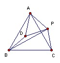

ABC is an equilateral triangle with circumcenter O. P is a point inside the circumcircle. Show that there is a triangle with side lengths |PA|, |PB|, |PC| and that its area depends only on |PO|.
Solution

Take PAD equilateral as shown. Then ADB and APC are congruent, so AD = PA and BD = PC. So BDP is the required triangle. Note that if D lies on BP (so that the triangle is degenerate) then ∠APB = ∠ACB, so P lies on the circumcircle. But we are told that P is not on the circumcircle, so the triangle is not degenerate.
I cannot see a geometric proof of the second part (or rather the only proof I can see degenerates into considering a large number of cases).
We can take represent A, B, C, P by the points 1, ω, ω2, z in the Argand diagram. The a, b, c are |1-z|, |ω-z|, |ω2-z|, so we can take the triangle with sides a, b, c to have vertices 0, ωz-ω2, ω-ω2z (remembering that |ω| = 1 and 1 + ω + ω2 = 0). But using the r, θ representation it is clear that the area of the triangle with vertices 1, h, k is |Im(½h'k)|, where h' is the complex conjugate of h. So in this case we get ½(-ω - ω2|z|2 + z + z') - where z' is the complex conjugate of z. But z+z' is real, ω has imaginary part -(√3)/2 and ω2 has imaginary part (√3)/2, so the imaginary part is ((√3)/4)(1 - |z|2), which depends only on OP2 = |z|2 as claimed.

© John Scholes
jscholes@kalva.demon.co.uk
8 Dec 2003
Last corrected/updated 8 Dec 03